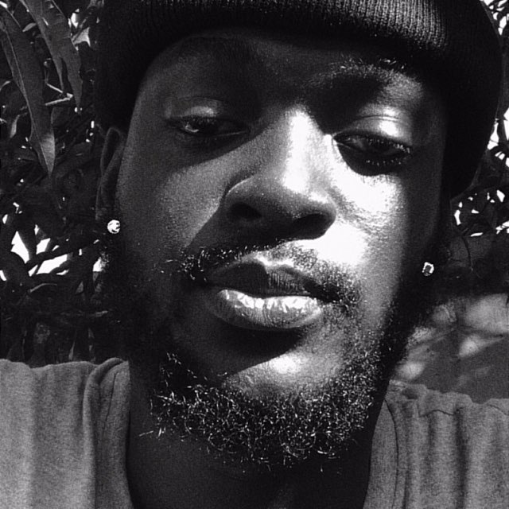

OTOO-YIRENKYI STEPHEN | WDD 130

I am Otoo-Yirenkyi Stephen, a dynamic professional bridging the worlds of technology, music, and agriculture. As a music producer, software engineer, and agribusiness entrepreneur, I thrive on continuous innovation. Currently a BYU Pathway student, I am a passionate "tech gem" dedicated to leveraging my diverse skills to create impactful solutions.